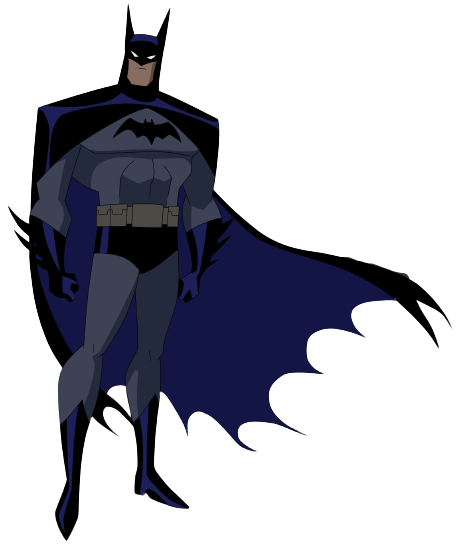

Batman's secret identity is Bruce Wayne, a wealthy American industrialist. As a child, Bruce witnessed the murder of his parents, Dr. Thomas Wayne and Martha Wayne, which ultimately led him to craft the Batman persona and seek justice against criminals.
